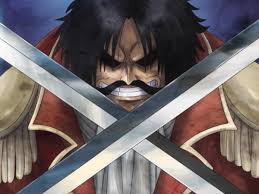

Inicio
Personajes
Historia
Contexto Histórico
La Era de la Piratería
Todo comenzó con las últimas palabras de Gol D. Roger, el Rey de los Piratas, antes de ser ejecutado. Sus palabras enviaron a miles de hombres al mar en busca de su tesoro: el One Piece.

Puntos clave
East Blue:Donde Luffy inicia su viaje y recluta a sus primeros compañeros.
Grand Line:El mar más peligroso del mundo, lleno de islas con climas imposibles.
El Nuevo Mundo:La segunda mitad del Grand Line, gobernada por los piratas más poderosos (los Yonkou).
Inicio
Personajes
Historia
Contexto Histórico